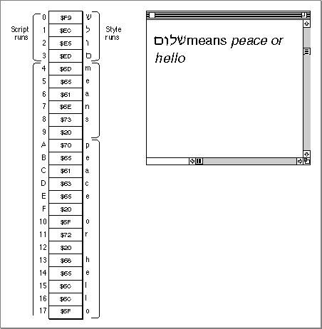
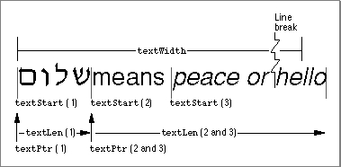
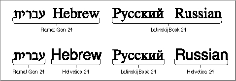

Legacy Document
Important: The information in this document is obsolete and should not be used for new development.
Important: The information in this document is obsolete and should not be used for new development.


Finding Word, Line, and Script Run Boundaries
This section describes the Text Utilities routines that you can use to determine where the boundaries of the current word in a text sequence are, where to break the line for drawing text, and where the end of the current subscript text run is. These routines are commonly used in word-processing applications.Finding Word Boundaries
When working with text in your application, you sometimes need to process each word in the text. You can use theFindWordBreaksprocedure to determine the starting and ending locations in a string of a word. You passFindWordBreaksa string and a starting position, and it searches backward for the start of the word, then searches forward for the end of the word.This procedure normally uses the string-manipulation (
'itl2') resource of the current script system in determining where the word boundaries are. Most string-manipulation resources include a word-selection break table of typeNBreakTablethat specifies what constitutes a word boundary in that script; however, some string-manipulation resources do not include such a table, in which caseFindWordBreaksuses default definitions of word boundaries. Some script systems provide a separate extension that allowsFindWordBreaksto find word breaks in a more sophisticated fashion such as using a dictionary lookup. The format of the word-selection break table is described in the appendix "International Resources" in this book.This procedure returns the beginning and ending of a word in a string. Theses values are returned in a table of type
OffsetTable, which contains values that indicate the starting and ending positions in the string of the word. TheOffsetTabledata structure is described in the section "The Offset Table Record" on page 5-44.You can also use
FindWordBreaksto break lines of text, although the procedure is more complicated than usingStyledLineBreak, as described in the next section. For more information, see the discussion of text drawing in the chapter "QuickDraw Text" in this book.Finding Line Breaks
You display text on the Macintosh screen by calling the QuickDraw text routines. These routines handle text in different fonts, styles, and sizes, and even draw text that is displayed in different directions. However, the QuickDraw text display routines do not break lines for you to fit into screen areas of your own designation, which means that you have to display your text line-by-line. (The QuickDraw text routines are described in the chapter "QuickDraw Text" in this book.)To draw a string line-by-line, you need to use the
StyledLineBreakfunction. What you do is start at the first character in your text and useStyledLineBreakto search for the first line break, draw that portion of the string, and then start up again with the character that follows the line break. You continue this process until the remaining characters all fit on one line. The size and style of the glyphs are factors in determining how many characters fit onto a line, since they affect the number of pixels required for each glyph on the line. Another factor in breaking lines is that it is desirable to break a line on a word boundary whenever possible.The
StyledLineBreakfunction looks for the next line break in a string. It accommodates different fonts, styles, and glyph sizes, and accounts for complications such as the word boundary rules for the script system of the text. You usually callStyledLineBreakto traverse a line in memory order, which is not necessarily the same as display order for mixed-directional text.StyledLineBreakfinds line breaks on word boundaries whenever possible.StyledLineBreakalways chooses a line break for the last style run on the line as if all trailing whitespace in that style run would be stripped.The
StyledLineBreakfunction works on one style run at a time. To useStyledLineBreak, you must represent the text in your documents in a manner that allows you to quickly iterate through script runs in your text and style runs within each script run. Figure 5-9 shows an example of a line break in a text string with multiscript text runs.Figure 5-9 Finding line breaks in multiscript text
 Use the
StyledLineBreakfunction when you are displaying text in a screen area to determine the best place to break each displayed line. You can only use this function when you have organized your text in script runs and style runs within each script run. This type of text organization used by most text-processing applications that allow for multiscript text.What you do is iterate through your text, a script run at a time, using
StyledLineBreakto check each style run in the script run until the function determines that it has arrived at a line break. As you loop through each style run, before callingStyledLineBreak, you must set the text values in the current graphics port that are used by QuickDraw to measure the text. These include the font, font size, and font style of the style run. For details on these parameters, see the chapter "QuickDraw Text" in this book.Once
StyledLineBreakhas arrived at a line break, you can display the line, advance the pointers into your text, and call the function again to find the next line break. You continue to follow this sequence until you've reached the end of your text.StyledLineBreakdoes not break on a space character, so a sequence of spaces of any length remains with the previous line.The
StyledLineBreakfunction uses a number of parameters; the value of some of these parameters must change for each style run, and the value of others must change for each script run. Figure 5-10 illustrates how the parameters of theStyledLineBreakfunction are used when finding a line break in text that contains a number of script and style runs.Figure 5-10 Relationships of the parameters of
StyledLineBreak The
textPtrparameter points to the start of the script run, thetextStartparameter is the location of the start of the style run, and thetextLenparameter is the number of bytes in the style run. ThetextWidthparameter specifies the number of pixels in the display line. Other parameters aretextEnd, which specifies the number of bytes in the script run, andtextOffset, in which the location of the break is returned. Declarations and descriptions of these parameters are found in the section "StyledLineBreak" beginning on page 5-79.Note that the style runs in
StyledLineBreakmust be traversed in memory order, not in display order. For more information about this, read about theGetFormatOrderroutine in the chapter "QuickDraw Text" in this book. It is also important to remember that word boundaries can extend across style runs, but cannot extend across script runs.The
StyledLineBreakfunction looks for a line break on a word boundary. The only time it cannot find such a break is when a word spans across an entire line. If such a word starts past the beginning of the line,StyledLineBreakdetermines that a break should occur before the start of the word; otherwise, it breaks the line in the middle of the word, at a character boundary instead of at a word boundary.StyledLineBreakuses the value of thetextOffsetparameter to differentiate between these two cases. ThetextOffsetparameter must be nonzero for the first call on a line and zero for each subsequent call to the function on the line.No matter which case occurs,
StyledLineBreakreturns a code that specifies whether or not it found a break and what kind of break (word or character boundary) it is. This value is one of the constants defines as theStyledLineBreakCodetype:
StyledLineBreakautomatically decrements thetextWidthvariable by the width of the style run for use on the next call. You need to set the value oftextWidthbefore calling it to process a line. Listing 5-4 shows a basic loop structure that you can use to callStyledLineBreakin your application.Listing 5-4 Using the
StyledLineBreakfunction
REPEAT {repeat for each line} textOffset := 1 textWidth := number of display pixels available for line done := FALSE; WHILE not done DO BEGIN {for each script run} textPtr := the address of the first byte of the script run textLen := the number of bytes in the script run WHILE not done DO BEGIN {for each style run} textStart := byte offset within script run of the start of the style run textEnd := byte offset within script run of the end of the style run {Set up the QuickDraw font parameters for style run} ... ans := StyledLineBreak(textPtr, textLen, textStart, textEnd, flags, textWidth, textOffset); if ans <> smBreakOverflow THEN done := TRUE; ELSE textOffset := 0;{always 0 after first call} END; END; {Display the text that starts at textPtr & continues } { for textOffset bytes} ... UNTIL {until no more text to process}Finding Subscripts Within a Script Run
Some script systems include subscripts, which are character sets that are subsidiary to the main character set. One useful subscript is the set of all character codes that have the same meaning in Roman as they do in a non-Roman script. For other scripts such as Japanese, there are additional useful subscripts. For example, a Japanese script system might include some Hiragana characters that are useful for input methods.When you are displaying or working with a string that contains subscript characters, it is often convenient to identify the subscript text runs so that you can treat those characters differently. You might, for instance, want to display the Roman subscript text in a different font, or apply different rules to it when searching for word boundaries. In Figure 5-11, the English words "Hebrew" and "Russian" are initially drawn in native language fonts from their script systems. Each of these words is then extracted and redrawn using a font from the Roman script system.
Figure 5-11 Extracting blocks of Roman text
 The
FindScriptRunfunction is used to identify blocks of subscript text in a string.FindScriptRunsearches a string for such a block, and sets aVARparameter to the length in bytes of the subscript run that begins with the first character in the string.FindScriptRunalso returns a script-run status record, which specifies the script code and subscript information for the block of text. The fields of the script-run status record are described in the section "FindScriptRun," beginning on page 5-81.